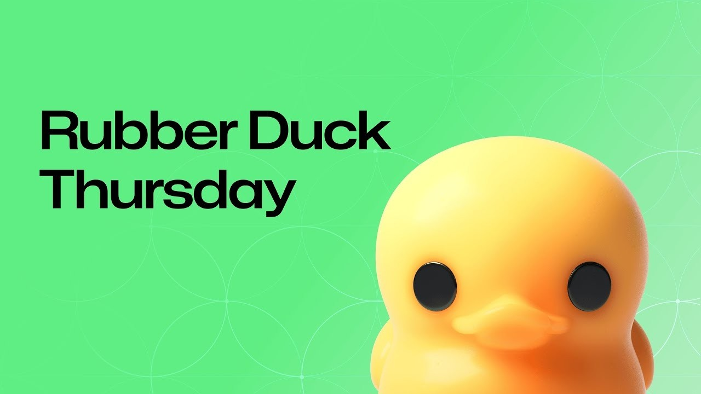

AI that runs the business
OpenClaw agents for the work between the systems: invoices, follow-ups, field handoffs, lab reviews, and logistics exceptions.
Where AI gets useful after the demo ends
Brad Groux is CEO of Digital Meld and a Microsoft integrations maintainer on OpenClaw. Andrea Griffiths brings the GitHub builder perspective.
What does an agent system look like when it meets a real workflow?
Context, an operating standard, hard checks, and a person who owns the decision.

Build the harness before you ask for magic.
A serious agent task should carry five boring fields. They move human judgment earlier and make the output reviewable.
Mode
Prototype, standard, or production?
Context
Which workflow, source files, owners, and systems matter?
Boundary
Least privilege per task: what may it read, write, send, or reach?
Verification
Which command, check, evidence, or rubric owns correctness?
Handoff
What changed, what passed, and what risk remains?
A center of excellence is a communication network, not a committee.
Bring the people who know the workflow, the data, the risk, and the support burden into the same loop.
Markdown turns context into an artifact everyone can inspect.
# Accounts Payable Review ## Trigger - Invoice enters the queue ## Required checks - [ ] Purchase order exists - [ ] Receipt matches quantity - [ ] Duplicate scan passed ## Stop condition Do not approve or pay. [Open the SOP](demo/scenarios/accounts-payable/SOP.md)
If you repeat an instruction twice, turn it into an SOP.
Chat is a good place to work through an idea. A repo is a better place for the standard.
A PRD forces the questions the demo skips.
$grill-with-docs interviews the plan until the user, owner, source of truth, boundary, proof, and support model are explicit.
$grill-with-docs promptThe model proposes. Deterministic tools judge.
Context
Read the real workflow, artifacts, owners, and constraints.
One bounded action
Draft, classify, patch, or propose the smallest useful move.
Hard verifier
Run calculations, schema checks, tests, policy rules, or source reconciliation.
The agent assembles the three-way-match evidence and exception queue. A finance reviewer still owns approval and payment.
The agent turns approved facts and reusable assets into a campaign packet with a visible claim ledger.
Operational agents make constraints visible before work moves.
Field Operations
Draft the morning dispatch handoff without assigning crews or bypassing safety.
Lab Management
Assemble sample-release evidence without changing or releasing a result.
A supply-chain agent should run an exception desk, not the company.
Rank risk, show the evidence, and give the owner a bounded next decision. Keep clean shipments quiet.

Pick one painful workflow. Ship one reviewable artifact.
 Join the SSTB.ai Discord
discord.gg/Gmfkm7QVSF
Join the SSTB.ai Discord
discord.gg/Gmfkm7QVSF